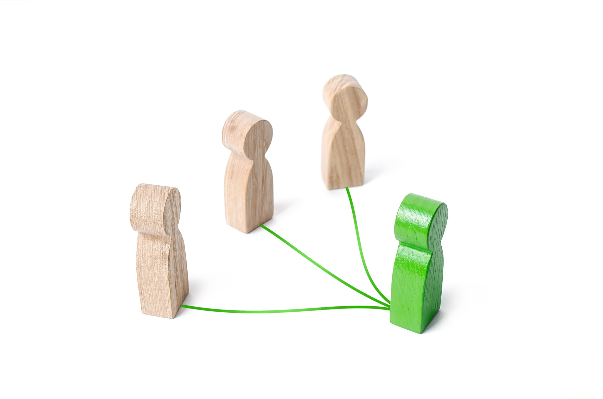

Understanding Crypto - Trilemma
When you are looking for a new project to invest in and buy their coins, it is important to understand what sets those projects apart from others. While there are many various gimmicks and additions, there is a single thing that is important for every blockchain project out there. The blockchain Trilemma. Just like a dilemma where you need to choose one from two, a Trilemma is where you can choose only two from three, and one thing will always be impossible. The best example is the old saying “I can do this job fast, cheap and good. Choose two.” Just like that there are three aspects of blockchains that many people are trying to put all together - Decentralization, Security and Scalability. Everyone is scrambling to solve this problem. If you want to hit big with your investment, keep your eyes open to solutions. This article will explain how each of these aspects causes problems for the other two.
Decentralization

We already wrote about decentralization in this article, where it was explained why such a concept and approach is not only preferable, but required in the long term stability of societies. Basically it means that the whole power is not concentrated in a single governing institution and is divided by all participants. Everyone checks everyone and each vote is equal.
That is exactly the problem - everyone checks everyone. That takes a lot of time. That is the reason why Bitcoin is now considered mostly as an investment tool, not a good method of transaction. If you have everyone checking everything, then there are no mistakes and no one can be unfair to anyone else. If only one trusted person checks everything, it will all happen much faster, but what if that trusted person makes a mistake and has sole authority to recognize said mistake? Ever had that time when you were right, but your teacher still did not accept the answer? That is the exact frustration centralization creates.
So the right path between centralization and decentralization, as always, is somewhere in the middle. It has to be balanced so that there is not a single node that can decide things and call shots. So one could say “sure, but we could change that to a voting system, where everyone can vote on certain decisions. Let there be few regulators, but if they start behaving wrongly, we vote them out.”
And that is exactly the problem with a completely democratic voting system. Let us imagine that everyone can vote and decide what will happen on the blockchain. It would be utter chaos. Most people would vote for short-term gains that pump the coin’s value and ruin the project in the long term. The questions and problems developers tackle every day are usually understood only by a few specific people in the project itself. Hoping that every coin holder will understand the problems in depth and vote for the best solutions is surreal. So there always has to be a middle path between giving everyone power and actually controlling the project.
Scalability
The problem with everyone checking everyone leads us to scalability. It is easy to say that a system works when there are few users who all just do what they are supposed to do. The real problems start when the number of users grows significantly. If we imagine a random social media website, it is clearly understandable. The more users there are, the more pictures they upload, the more servers are needed for those pictures. What people often do not realize is that the more users there are, the more requests to the servers are being sent. Some systems function very well with a few users, but are struggling when there are many.
Very many projects suddenly realize that their perfect product that caused many people to join is bad now, just because it became so popular and gathered so many users. The same can easily happen to blockchain projects that have really good results in a test environment. Then organic users start to take part - users with bad internet connections, slow computers and faulty systems. If everyone has to check everything, then the whole system can come to a standstill, waiting on a server that has been bought in 1994 and is sitting in a lonely warehouse basement, struggling to do basic addition.
This means that all of the blockchains built need not only to come up with the perfect solution for the decentralization problem, but to also solve how that is going to work when there are not 3000 users, but 30 million. Even if you do introduce one node that checks everything, pretty soon that will not be enough and you’ll need a hierarchy anyway. This becomes even more important when you take into account that most blockchains now do not just plan to be pure coins, but also want to run applications and smart contracts. A chain of apps running on a chain of computers is a serious undertaking.
Security
And with all these aspects in mind, you always have to consider that not everyone will be playing by the rules. Even worse - this is going to be a hunting ground for a lot of hackers and vile people. This means that all layers need extra layers upon them. Every action has to be checked by others, then those others need to be checked if they cheated or not. And if a fraud has been detected, others need to be able to punish the cheater, to lock him out. What if the evil person who has infiltrated as the one who checks transactions also infiltrates as the one who keeps order? And this can go on and on.
Because of that various safeguards are placed, which in turn slow everything down again. Every time a new node joins the system, it has to be examined if it is fit and then always be controlled, as it can be fine when it joins, but become corrupted later. Even if it was the safest blockchain in the world, completely private, where you know every participant by name and meet them every day, you can never know what files will they open today and what viruses will find a new home on their computer. And that happens constantly.
It is especially easy to harm blockchains as one of their main goals is to be open about everything, including the code it consists of. So every hacker can see through the code and see if it has any faults to exploit. Even old and tested blockchains suffer from attacks, some more successful than others, because this is an attack that yields important gains if you succeed. Not like posting a funny picture on the frontpage or adding imaginary gold in a video game. If you crack open a blockchain, you get a lot of assets turned into money real fast.
The biggest problem is that there is no real way to measure security. You can measure decentralization and scalability to some extent, but security? It is not like measuring the safest cities by the amount of crime happening there compared to others, because if a blockchain is not secure, it takes a single attack to take it down. Is a blockchain safe if it is too small for serious hackers to be interested in it? That is why safety is often ignored. It can’t be sold to shareholders, it can’t be explained to the layman and sending out a tweet “we are safe” really does not mean anything much.
Conclusion
Despite all these troubles, there is a constant flow of innovations in the blockchain industry. Some are trying to make very trusted nodes that police the rest of the network, but that is too centralized. Some are making blockchains with no regulations, but they can soon become useless if there is no way to update them and thus patch security issues. People will choose those projects, where they feel that they are ready to sacrifice something. Speed for security or security for accessibility. Or maybe something completely new will come along and bypass all these problems with a single solution. You, as an investor, have to look out for such projects.
Thank you for reading our blog. If you have any questions about the topic or want to suggest a new one, please write an email to [email protected].